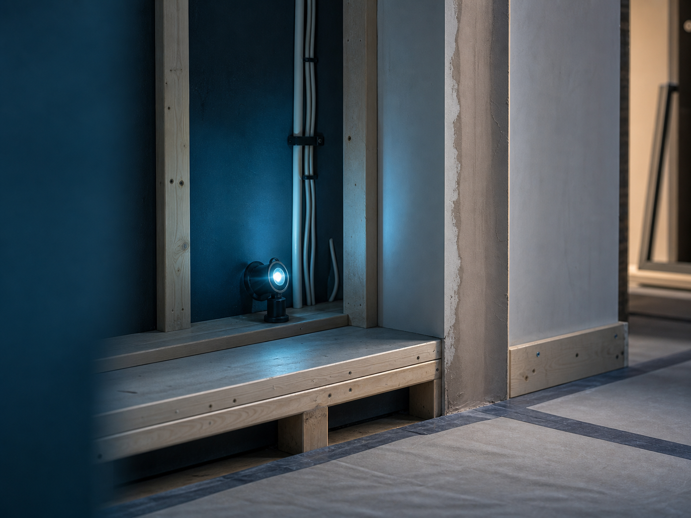
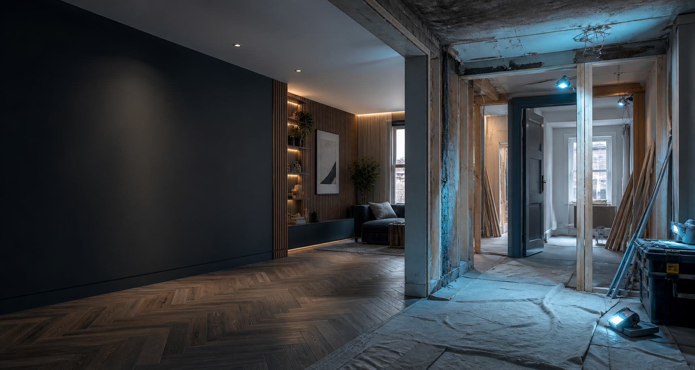
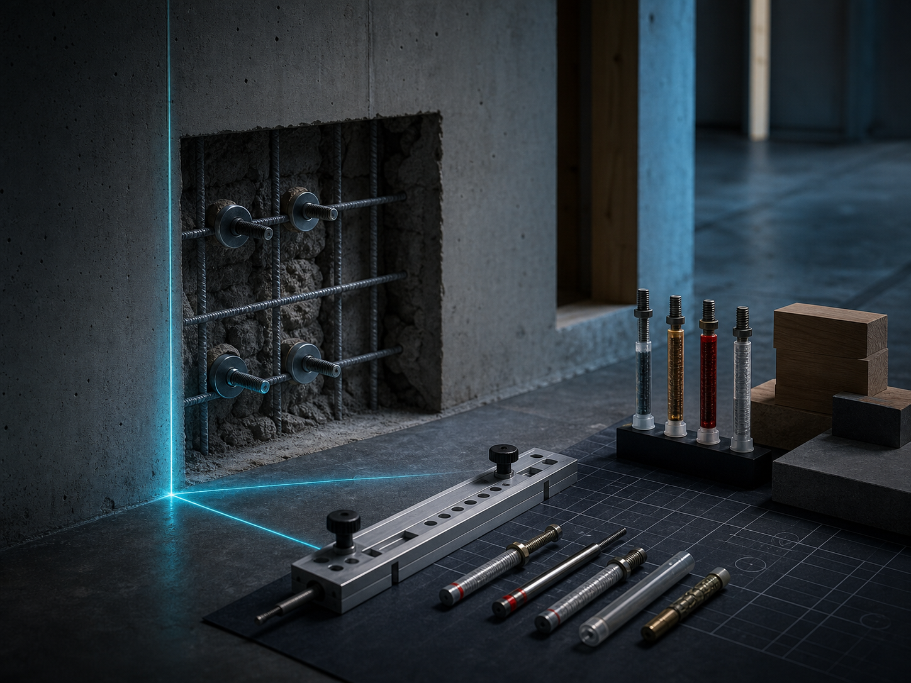
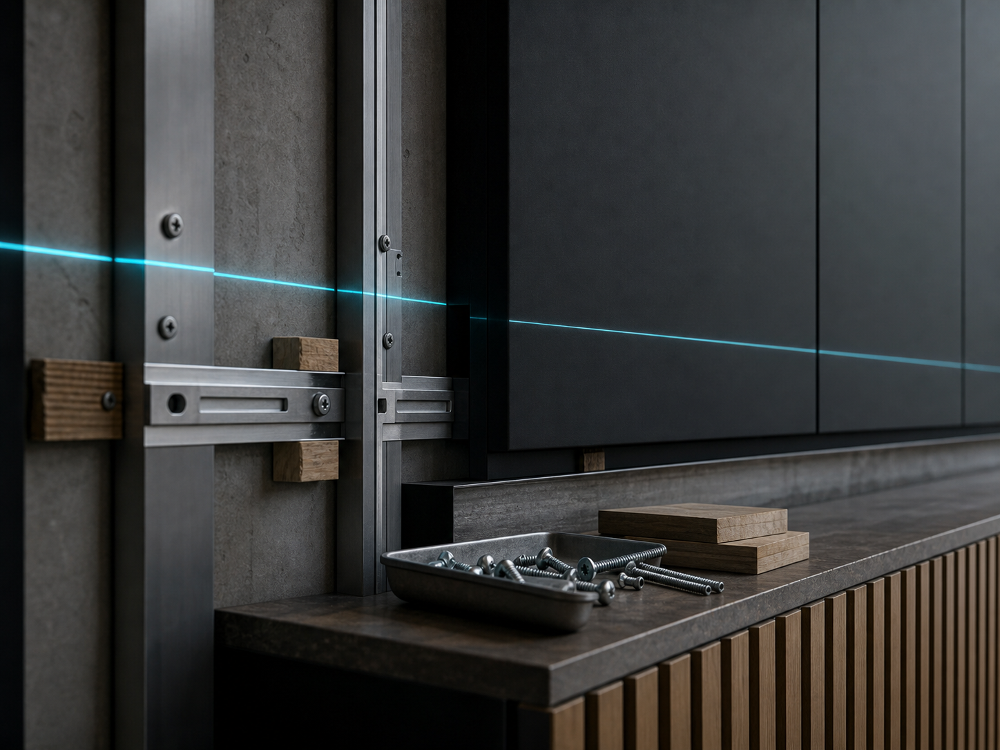

Building
Domestic building work
Practical building work for homes, including improvements, repairs, alterations and preparation for new spaces.

Construction services organised around the point of the project: make the property stronger, easier to use and ready for the next finish.
Every service is planned around access, protection, materials, build sequence and a clear finish.

Practical building work for homes, including improvements, repairs, alterations and preparation for new spaces.

Targeted upgrades that make a room, exterior area or property feature more durable and useful.

Installation work for built elements where measurement, fixing, support and finish all need to line up.
Review access, surfaces, services and what the finished space needs to achieve.
Set out materials, order of works, protection and practical timings before starting.
Deliver the agreed construction stages with tidy communication as work progresses.
Check the details, clean the work area and leave the result ready for use.
Tell Norvix what you want built, installed, changed or repaired.